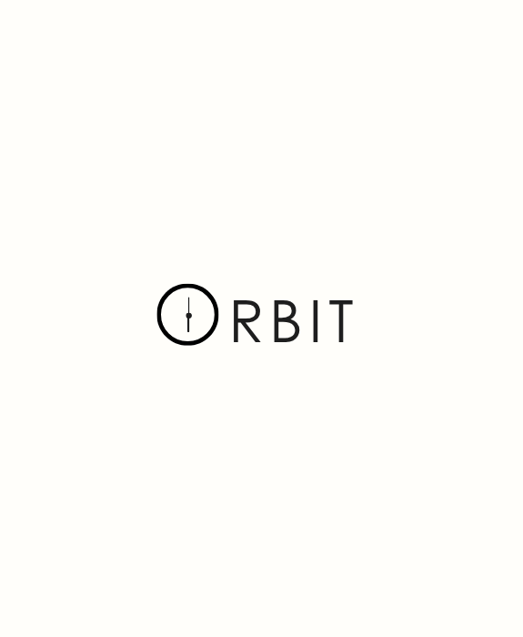

I design ideas. I bring them to life with code.
UI/UX designer & front-end tinkerer from Dhaka. I turn tangled flows into calm interfaces — and build them for real.
- design
- code
- AI
- bunnies
About me
I'm a UI/UX designer who enjoys solving problems through design. For me, good design is not simply
about making an interface look beautiful, it is about making things easier to understand, easier to
navigate, and more comfortable to use. I'm particularly interested in user flows, information
architecture, interaction design, and building consistent design systems. I've worked on projects
ranging from mobile applications to e-commerce and SaaS interfaces, where I've practiced research,
wireframing, prototyping, and high-fidelity design.
I also have a background in frontend development. I've worked with HTML, CSS, JavaScript, Bootstrap,
Tailwind, React and Flask, and I enjoy bridging the gap between a design file and a working
interface. This combination has helped me think beyond visual design and consider responsiveness,
usability, components, and technical feasibility while designing.
Outside of design and development, I've worked extensively in data annotation and AI evaluation.
My experience includes image/video annotation, object tagging, transcription, content quality
assessment, pairwise comparison, AI-output evaluation, fact-checking, and quality assurance.
These roles have developed my attention to detail, analytical thinking, and ability to follow
complex guidelines consistently. I'm interested in growing as a designer while continuing to explore
the intersection of design, technology, and AI.
Selected Works
View all worksPastel-themed modern e-commerce storefront with intuitive catalog filters, cart flows, and an admin management dashboard.
open live site ↗Minimalist skincare branding and product experience featuring responsive layouts, soft aesthetic typography, and seamless transitions.
view case study ↗
A focus and time-tracking web app UI engineered to eliminate distraction with simplified logging and weekly goal metrics.
view case study ↗
Zero-waste recipe suggestion interface that transforms leftover groceries into customized meals with conversational AI prompting.
view case study ↗Experience
- Conducted side-by-side (SxS) evaluations of AI-generated images to assess visual accuracy and alignment with complex text prompts.
- Identified anatomical artifacts, structural inconsistencies, and typographic hallucinations in AI-generated visual outputs.
- Wrote clear, evidence-based rationales for image preferences, considering spatial composition, visual coherence, and safety guidelines.
- Supported generative AI model improvement through consistent quality assessment and evaluation of visual outputs.
Skills: Multimodal AI · Side-by-Side (SxS) Evaluation · Generative AI · Visual Quality Assessment · Prompt Alignment · Artifact Detection · Spatial Composition · Visual Coherence · RLHF
- Annotated, transcribed, and reviewed complex conversational audio data to support AI-powered speech recognition model training.
- Evaluated and corrected machine-generated transcripts for strict verbatim accuracy, including stutters and filler words.
- Verified and classified data attributes including sentiment, code-switching, and speaker metadata across large datasets.
- Conducted content authenticity checks to identify synthetic (TTS), pre-recorded, and scripted audio for high-quality training data.
Skills: Audio Annotation · Speech Data Annotation · Transcription · Verbatim Transcription · Sentiment Analysis · Speaker Metadata · Audio Classification · Synthetic Audio Detection · Content Verification · Translation
Onboarded as a 'Vibe Coder' based on analytical problem-solving skills. Besides, I capture first-person perspective (egocentric) and hand-tracking videos specifically designed for object labeling and action recognition. I also evaluate and verify location-based tasks to enhance AI's spatial and contextual understanding. Finally, I review and rate AI outputs to ensure they meet strict quality, safety, and relevance standards.
Skills: AI Training · Visual Data Collection · Quality Assurance Testing · Geospatial Data Analysis · First-Person Perspective
- Analyzed short video clips to accurately identify and document hand movements and gestures.
- Wrote detailed textual descriptions of single-hand and bimanual actions for annotation tasks.
- Contributed to high-quality datasets for AI and machine learning model training.
Skills: Video Annotation · Action Recognition · Hand Movement & Gesture Analysis · Bimanual Action Description · Dataset Curation
- Build practical technical and product skills through a self-paced, AI-driven curriculum.
- Contribute to a portfolio-ready capstone project demonstrating technical proficiency and problem-solving.
- Leverage modern AI tools to accelerate design and development workflows within an AI-driven engineering environment.
Skills: AI-Assisted Design · UI/UX Design · Product Design · AI-Driven Development · Problem Solving · Wireframing · Prototyping · Edge Cases · Design Systems
- Pairwise comparisons, object tagging, audio/video/image labeling, and content quality assessment.
- Performing detailed analysis to ensure the delivery of high-quality training data for machine learning and AI models.
- Following strict guidelines to maintain accuracy, consistency, and compliance, along with using annotation tools and handling multimedia data for large-scale AI projects.
Skills: Pairwise Comparison · Annotation · Multimedia Data Handling · Analytical Skills · Transcription · Translation · Acting Voice · Labelling
- Evaluated AI model outputs across six critical dimensions: Instruction Following, Truthfulness, Correctness, Writing Quality, Verbosity, and Overall Utility.
- Conducted "Head-to-Head" (pairwise) and "Sets of Five" (trajectory) rankings and provide preference data for RLHF.
- Performed rigorous verification of AI claims using external sources to identify hallucinations, outdated information, and logical inconsistencies.
Skills: Reinforcement Learning Human Feedback (RLHF) · Pairwise Comparison · Prompt Analysis · Hallucination Detection and Fact Checking Verification · Quality Assurance
Worked as a Frontend Development Intern, contributing to multiple web-based projects with a focus on clean UI, functionality, and user experience.
- Designed and implemented responsive user interfaces using HTML, CSS, and JavaScript
- Integrated frontend components with backend APIs and handled CRUD-based workflows
- Gained hands-on experience in authentication systems, data handling
- Improved problem-solving skills by working on real-world projects including a collaborative presentation tool and game-logic based applications
Skills: JavaScript · Express.js · React.js · PostgreSQL · REST APIs · JSON Web Token (JWT) · Bootstrap (Framework) · Full-Stack Development · Web Application Development · HTML · CSS · Scripting · Authentication Systems · Game Logic · Algorithms · Responsive UI · CRUD · Real Time Integration · Token Management
Experienced in AI training, data annotation, and quality evaluation. My work primarily focuses on evaluating AI model responses, and conducting A/B testing to compare model outputs for accuracy, safety, and naturalness. I am skilled in fact-checking and my core strength lies in performing detailed quality reviews to ensure high-quality standards and improve the overall performance of AI models.
Skills: C++ · JavaScript · JSON · Java · Swift · Verilog · C# · Go · English · Artificial Intelligence (AI)
Education
Skills & Tools
UI/UX Design
UX Research: User Research, Competitor Analysis, User Needs, Personas, Information Architecture
UX Design: User Flows, Interaction Design, Wireframing, Responsive Design, Usability, Task-Oriented Interfaces
UI Design: Visual Hierarchy, Layout, Typography, Color Theory, Components, Design Systems, Responsive Interfaces
Prototyping: Low-Fidelity Wireframes, High-Fidelity UI, Interactive Prototypes, Design Iteration
Design Tools: Figma, FigJam, Canva, AI-Assisted Design
AI & AI Fluency
AI Evaluation: AI Response Evaluation, Quality Assessment, Factual Verification, Comparative Evaluation, Ranking
AI Training & Data: Data Annotation, Multimodal Annotation, Data Validation, Training Data Quality
Prompting: AI Capabilities & Limitations, Prompt Engineering, Prompt Analysis, Instruction Following, AI-Assisted Workflows
Agentic AI & MCP: Agent Skills, Subagents, Model Context Protocol (MCP), AI Agent Workflows
AI Tools & Development: Claude, Claude Code, Claude API, ChatGPT, Gemini, AI-Assisted Design, AI-Assisted Development
Technical Skills
Frontend: HTML5, CSS3, JavaScript, React, Bootstrap, Tailwind CSS, Responsive Web Development
Programming & Tools: Python, C, C++, Git
Python & Data: Pandas, NumPy, Matplotlib, Seaborn
Additional
Soft Skills: Problem Solving, Analytical Thinking, Adaptability, Leadership, Communication
Languages: Bangla (Native), English (Professional Working Proficiency)
Office & Productivity: Microsoft Word, PowerPoint, Excel, Google Workspace
Typing: 40+ WPM (English)